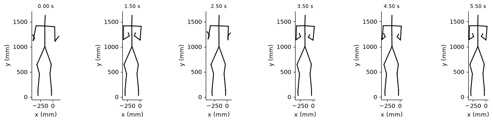
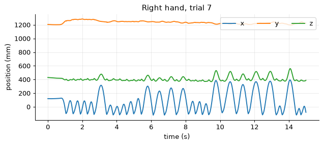
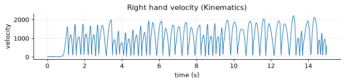
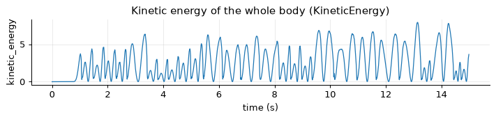
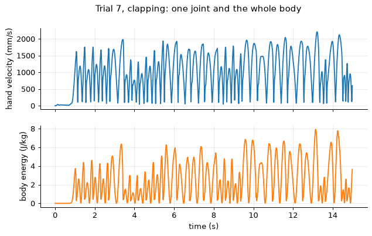
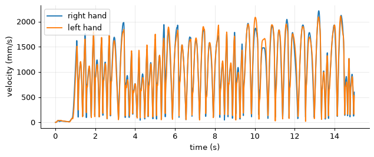

Note
Go to the end to download the full example code.
Your first feature#
Load a motion-capture recording, compute the speed of a hand and the kinetic energy of the whole body, and look at the results as a table and as figures.
- Goals:
load an example recording; create a feature and read what it takes and returns; compute it one sample at a time (
process) and on a whole recording (run); plot and tabulate the result (Recorder).- Prerequisites:
Python and NumPy;
pip install pyeyesweb(see Installation).- Data:
trial 7 of the example session (clapping hands, Qualisys, 100 Hz), from second 4 to second 19.
- Time:
about 15 minutes.
Load a recording#
The example recordings are motion-capture takes of one performer, exported by Qualisys at 100 frames per second.
load_qualisys_trial() returns a QualisysTrial: an array of
positions with the names of the joints, the sampling rate and the unit. Trial 7 is a clapping movement: the performer
stands still for the first few seconds and then claps. We keep seconds 4 to 19 of the recording; the clock of the loaded
trial starts again at 0.
from pyeyesweb.datasets import load_qualisys_trial
trial = load_qualisys_trial(7, start=4, stop=19)
print(trial.task, "-", trial.condition)
print("positions:", trial.positions.shape, "= (frames, joints, x y z), in", trial.units)
print("sampling rate:", trial.sampling_rate, "Hz, duration:", trial.duration, "s, starting at", trial.offset, "s of the recording")
print("joints:", ", ".join(trial.labels))
Clapping hands - synchronized
positions: (1500, 20, 3) = (frames, joints, x y z), in mm
sampling rate: 100.0 Hz, duration: 15.0 s, starting at 4.0 s of the recording
joints: Head, Neck, Spine, Pelvis, Left_Shoulder, Left_Elbow, Left_Wrist, Left_Hand, Right_Shoulder, Right_Elbow, Right_Wrist, Right_Hand, Left_Hip, Left_Knee, Left_Ankle, Left_Foot, Right_Hip, Right_Knee, Right_Ankle, Right_Foot
The 41 markers of the recording have been averaged into 20 joints (Head, Neck, … Right_Foot). Positions are
in millimetres, as Qualisys exports them: we will say so to the features that need to know. The figure shows six
frames of the movement as stick figures.

Takeaway. A recording is an array of shape (frames, joints, 3) plus a sampling rate and a unit.
Look at one joint#
A feature of one point takes the positions of one joint: an array of shape (frames, 3).
trial.joint(name) returns it. Here are the three coordinates of the right hand against time, in seconds.
hand = trial.joint("Right_Hand")
time = trial.timestamps
print("right hand:", hand.shape, "first position (mm):", hand[0])
fig, ax = plt.subplots()
ax.plot(time, hand)
ax.set_xlabel("time (s)")
ax.set_ylabel("position (mm)")
ax.legend(["x", "y", "z"], ncol=3, loc="upper right")
ax.set_title("Right hand, trial 7")

right hand: (1500, 3) first position (mm): [ 119.92 1205.9 429.547]
Text(0.5, 1.0, 'Right hand, trial 7')
Takeaway. Positions and times are plain NumPy arrays; trial.timestamps gives the time of every frame in seconds.
Create a feature#
A feature is a Python object, configured when it is created. Kinematics computes the
velocity, acceleration or jerk of a point from its positions (see Kinematics and energy). Two parameters matter
here: sampling_rate (frames per second) and units, the unit of the positions we will give it. Our data are in
millimetres, so we say units="mm".
from pyeyesweb.low_level import Kinematics
kinematics = Kinematics(sampling_rate=100, units="mm")
Before it sees any data, a feature describes itself. inputs is what one call receives, outputs what it returns
(with units), parameters how it is configured.
print(kinematics.inputs)
print(kinematics.outputs)
print(dict(kinematics.parameters))
Inputs(point: sample (?) - position of the point (or value of the signal))
Schema(Output('velocity', unit='mm/s'))
{'dims': None, 'input_mode': 'point', 'output_dims': 'tangential', 'output_type': 'velocity', 'filter_window_length': 15, 'filter_polyorder': 3, 'movement_threshold': 0.005, 'sampling_rate': 100, 'units': 'mm'}
Takeaway. inputs, outputs and parameters are known before any data arrives.
Process one sample#
process takes one sample and returns a Result. The feature keeps its state between calls,
as it would in a live loop. The time of the sample, in seconds, goes in the keyword timestamp.
result = kinematics.process(hand[0], timestamp=time[0])
print(result)
print("status:", result.status, "| velocity:", round(float(result.velocity), 3), "mm/s")
KinematicsResult(status=OK, velocity=7.5886e-13)
status: OK | velocity: 0.0 mm/s
The status says whether the result holds a value (OK), and the value of every output is an attribute of the result.
Feed the next few samples; the velocity of the right hand starts to change as the hand moves.
for index in range(1, 4):
result = kinematics.process(hand[index], timestamp=time[index])
print(f"t = {time[index]:.2f} s status = {result.status} velocity = {result.velocity:8.3f} mm/s")
t = 0.01 s status = OK velocity = 1.043 mm/s
t = 0.02 s status = OK velocity = 1.619 mm/s
t = 0.03 s status = OK velocity = 1.079 mm/s
Takeaway. process is the live interface: one sample in, one Result out.
Run a whole recording#
When the data are already recorded, run applies the same computation to all of them and returns a
Recorder: one row per sample. run starts from a fresh state, so the first rows of the
loop above are not carried over.
speed = kinematics.run(hand, timestamps=time)
print(speed)
print("peak velocity of the right hand:", round(float(speed.velocity.max())), "mm/s at",
round(float(time[np.argmax(speed.velocity)]), 2), "s")
Recorder(Kinematics, rows=1500, columns=['velocity'], status={'OK': 1500})
peak velocity of the right hand: 2214 mm/s at 13.21 s
plot_recorder (from helpers.py next to this script) draws every output of a recorder against time, and shades the
rows that are not OK. Here every row is OK, so nothing is shaded.

Takeaway. run is the offline interface and gives the same numbers as a loop of process calls.
A feature of the whole body#
KineticEnergy takes a whole skeleton, one frame of shape (joints, 3) per call, and
measures the amount of motion of the body: fast joints count more, and each joint has a weight (see
Kinematics and energy). The trial knows its joints, so trial.skeleton gives the description the feature needs.
This feature has no units parameter: it works in the unit of its input. We convert the positions to metres, so that the
energy is in the usual units (a weight of 1 for every joint makes it joules per kilogram).
from pyeyesweb.low_level import KineticEnergy
metres = trial.to_units("m")
energy = KineticEnergy(skeleton=trial.skeleton, sampling_rate=100)
body = energy.run(metres.positions, timestamps=time)
print(body)
print("outputs:", energy.outputs)
Recorder(KineticEnergy, rows=1500, columns=['kinetic_energy'], status={'OK': 1500})
outputs: Schema(Output('kinetic_energy', unit='<length>^2/s^2'))

Takeaway. A feature of the whole body takes frames of shape (joints, 3); give it the unit it expects.
From a recorder to a table#
A recorder is a table with one row per sample. recorder[k] is the result of sample k, recorder["velocity"]
(or recorder.velocity) is a column as a NumPy array, to_frame() a pandas DataFrame with the status names and
to_numpy() the numbers. The last result that was OK stays in feature.latest.
print(speed[100])
print(speed.to_frame().iloc[[0, 1, 100, 500]])
print(speed.to_numpy().shape, "| latest:", kinematics.latest)
KinematicsResult(status=OK, velocity=1050.52)
status timestamp velocity
0 OK 0.00 7.588600e-13
1 OK 0.01 1.042670e+00
100 OK 1.00 1.050517e+03
500 OK 5.00 1.629216e+03
(1500, 1) | latest: KinematicsResult(status=OK, velocity=598.531)
Put the two features side by side: the hand moves when the body does. The energy peaks at the claps, where the hands move fastest.
fig, (top, bottom) = plt.subplots(2, 1, sharex=True, figsize=(8, 4.4))
top.plot(time, speed.velocity, color="C0")
top.set_ylabel("hand velocity (mm/s)")
bottom.plot(time, body.kinetic_energy, color="C1")
bottom.set_ylabel("body energy (J/kg)")
bottom.set_xlabel("time (s)")
fig.suptitle("Trial 7, clapping: one joint and the whole body")

Text(0.5, 0.98, 'Trial 7, clapping: one joint and the whole body')
Takeaway. A Recorder is a table of results; every output is a column, and the status of each row is kept.
Try it#
Compute the velocity of the left hand with the same
Kinematicsobject (runresets it) and plot it together with the right hand. Do the two hands move at the same time?Ask
Kinematicsfor the acceleration instead of the velocity (parameteroutput_type; the output is then namedacceleration). At what time is the right hand accelerating most?Load trial 8 (the same movement, unsynchronized) from second 5 to second 15 and compare its mean kinetic energy with that of trial 7 over the same seconds.
Solutions#
Exercise 1. The same feature object, another joint.
left = kinematics.run(trial.joint("Left_Hand"), timestamps=time)
fig, ax = plt.subplots()
ax.plot(time, speed.velocity, label="right hand")
ax.plot(time, left.velocity, label="left hand")
ax.set_xlabel("time (s)")
ax.set_ylabel("velocity (mm/s)")
ax.legend()

<matplotlib.legend.Legend object at 0x7f7877dc8690>
The two hands rise and fall together: in a clap they meet and part at the same instants.
Exercise 2. output_type="acceleration" makes the output acceleration.
acceleration = Kinematics(sampling_rate=100, units="mm", output_type="acceleration").run(hand, timestamps=time)
peak = int(np.argmax(np.abs(acceleration.acceleration)))
print(f"largest acceleration: {acceleration.acceleration[peak]:.0f} mm/s^2 at {time[peak]:.2f} s")
largest acceleration: 31896 mm/s^2 at 5.50 s
Exercise 3. Another trial, the same seconds, the same feature.
other = load_qualisys_trial(8, start=5, stop=15).to_units("m")
same = load_qualisys_trial(7, start=5, stop=15).to_units("m")
mean_energy = {}
for name, recording in (("synchronized (trial 7)", same), ("unsynchronized (trial 8)", other)):
mean_energy[name] = energy.run(recording.positions, timestamps=recording.timestamps).kinetic_energy.mean()
print(f"{name}: mean kinetic energy {mean_energy[name]:.2f} J/kg")
synchronized (trial 7): mean kinetic energy 2.43 J/kg
unsynchronized (trial 8): mean kinetic energy 3.92 J/kg
Next steps#
Results, statuses and recorders: the objects returned by
processandrunin detail.Kinematics and energy: the definitions behind
KinematicsandKineticEnergy.Layer 2: low-level features: every feature of the layer, with its parameters, inputs and outputs.
The next tutorial, The contract every feature follows, goes through the rules that every feature follows.